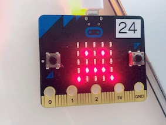

デジタルプロトタイピング
＜光るものを10個集める＞
＜チェリンと考えたアイデア＞
作りたかったもの→『（LEDで）光るステッカー』
＜アイデア説明とQ&A＞
できること
パソコンのキーを押したり、マイクロビットのようにプログラムすることで、シールの絵柄が変わる
用途
・パソコンのケースに貼って授業が分からないときに悲しい顔を表示する、
分かったら笑った顔を表示することで意思表示をしてみる
・ステッカーに好きな絵柄を登録して、自分の好きな柄にケースを着せ替えられるようにできる
・車の後ろガラスにステッカーを貼ることで車線変更時に、後ろの車に感謝を伝える
・家の窓ガラスに貼って、イルミネーションに使う
どんなプロトタイプをした？
・micro bitとscratchで簡単なプログラム作った
・LEDで表示したいイラストや文字を紙に書いた
プロトタイプの中身はどうなってる？
micro bitとscratchを連携し、パソコンのキーボードで、
LEDを使って3つの顔を表現できるようにした

どこまで実現できた？
パソコンのキーを押すだけで違う顔を表示できるところまで↓
どこが足りなかった？
電光掲示板みたいに好きなタイミングで特定のLEDを光らせるための技術
(マトリックスに関する知識が必要らしい)
どうすれば実現できる？
薄いLEDを使ったシールを作り、さっきあげた技術を使ってプログラムを組む
＜やってみて感じたこと＞
アイデアをプロトタイプして、どう相手に伝えればいいのかを、実際に手を動かしながら
考えることができたので楽しかった。同時に、必要な技術をもっと身につけたいと思いました。